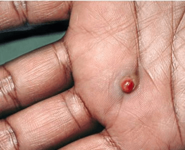

Pyogenic granulomas are skin growths that are small, round, and usually bloody-red
in color. They tend to bleed because they contain a large number of blood vessels.
They’re also known as lobular capillary hemangioma or granuloma telangiectaticum.
These skin growths mainly affect children and young adults, although they can
develop in people of all ages. They are also fairly common in pregnant women.
The hormone changes that occur during pregnancy can cause these growths to develop.
A pyogenic granuloma starts off as a lesion with a rapid growth period that usually
lasts a few weeks. It then stabilizes into a raised, reddish nodule that’s typically
smaller than 2 centimeters. The lesion can appear smooth, or it might have a crusty
or rough surface, particularly if it bleeds a lot.
They’re benign (noncancerous) and can be safely removed through various methods.

How a pyogenic granuloma is treated depends on its size and location:
You might not need treatment for small pyogenic granulomas. These often go away on their own.
If you have a bigger growth, your doctor will most likely shave it off and lightly
cauterize or burn it. Cauterizing helps stop bleeding and can reduce the risk
of it growing back.
According to the AOCD, the most effective way to remove pyogenic granulomas
involves surgically removing the entire growth and using stitches to close the
wound. This is a more invasive procedure than scraping one off. A pyogenic granuloma
will usually be surgically removed if it has recurred once after a nonsurgical approach.
Alternatively, your doctor might apply a chemical, such as silver nitrate, to the
pyogenic granuloma to help with the bleeding.
These growths can also be removed using laser surgery.
Don’t pick at the granulomas or try to remove them on your own. They tend to bleed for
a long time, so having a doctor remove them with proper instruments and cautery tools is a must.
Pyogenic granulomas that grow on your eye can be surgically removed or treated with ointments containing corticosteroids, which help reduce inflammation.
If you’re pregnant, your doctor might recommend waiting to see if these growths disappear on their own after delivery. A decrease in hormone levels may help the lesion regress on its own. Ultimately, this approach is the safest for the growing fetus.
Researchers are studying noninvasive treatments for pyogenic granulomas, particularly for children. Recent studies have found that a topical medication called timolol, applied as a gel to the nodule, is effective at treating the lesion without negative side effects.